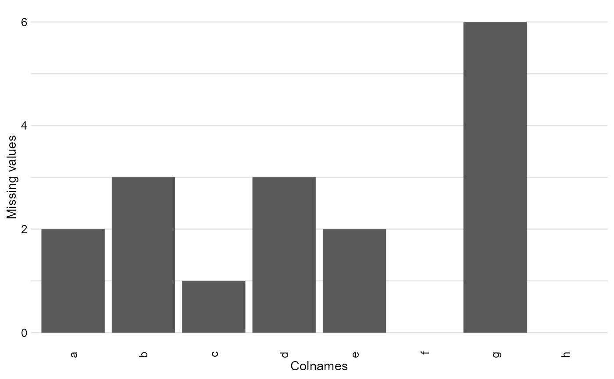
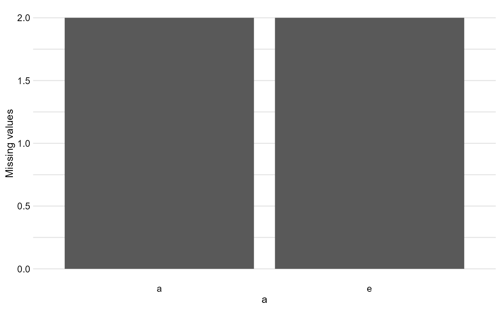
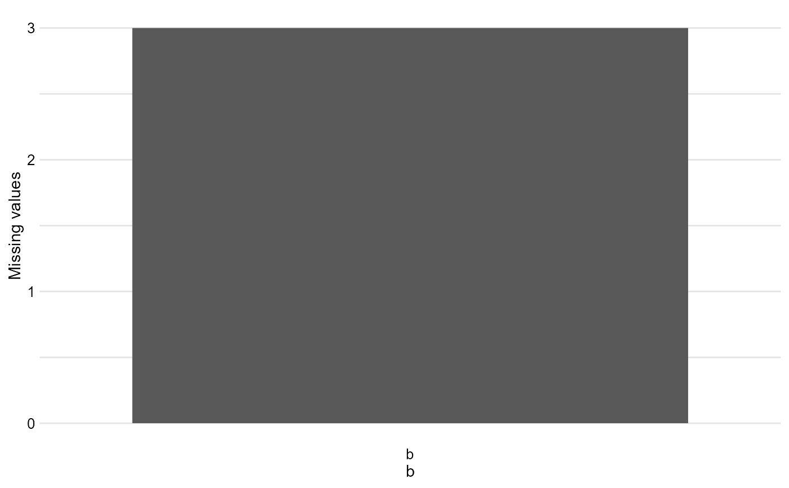

R/find_missing_values.R
find_missing_values.RdThe aim of this function is to check how many missing values has our data.
find_missing_values(df, variable = NULL)dataframe
selected column name/names (default value = all columns)
A table and a diagram representing the number of missing values in each/selected colums.
library(ggplot2)
#> Warning: package 'ggplot2' was built under R version 4.2.3
df <- data.frame(data.frame(a = c(2,5,4,NA, 5,7,NA), b = c(NA,NA,2,NA, 5,7,3),
c = c(23,5,4,1, 5,7,NA), d = c(NA,NA,2,NA, 5,7,5),
e = c(4,5,4,NA, 0,7,NA), f = c(1,123,2,87, 5,7,6),
g = c(253,NA,NA,NA, NA,NA,NA), h = c(3,34,2,5, 5,7,56)))
find_missing_values(df)
#> $Table
#> Column name Number of missing values
#> 1 a 2
#> 2 b 3
#> 3 c 1
#> 4 d 3
#> 5 e 2
#> 6 f 0
#> 7 g 6
#> 8 h 0
#>
#> $Diagram
#> Warning: Removed 2 rows containing missing values (`position_stack()`).

#>
find_missing_values(df, variable = c("a", "e"))
#> $Table
#> Column name Number of missing values
#> 1 a 2
#> 2 e 2
#>
#> $Diagram

#>
find_missing_values(df, variable = "b")
#> $Table
#> Column name Number of missing values
#> 1 b 3
#>
#> $Diagram

#>